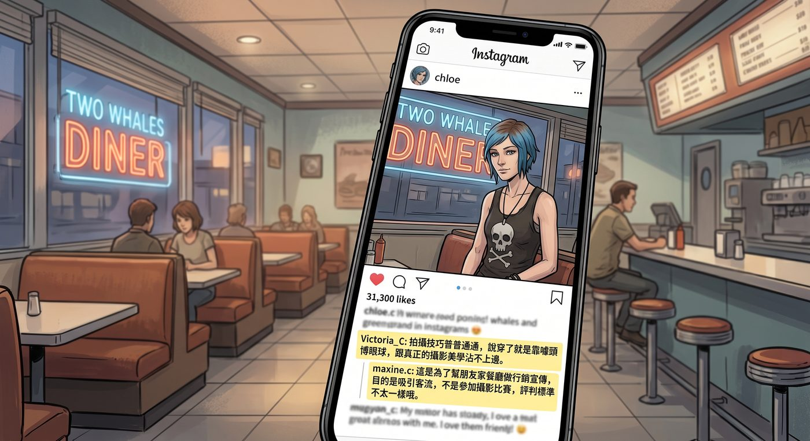

限動風波(續):留言區攻防戰

一、長尾營銷
限動的熱度過了幾天漸漸退去,但 Max 留了個心眼——她把其中幾張沒那麼誇張、Chloe 表情正常不少的照片單獨挑出來,重新修圖後發成一則正式貼文,構圖巧妙地把雙鯨餐廳的招牌完整帶進了背景。
「這叫長尾營銷,」Max 得意地展示成品,「限動只有 24 小時,正式貼文能一直留在主頁上,搜尋餐廳名字都搜得到。」
貼文發出去沒多久,底下留言區就熱鬧起來,大多是誇讚和調侃,直到一則熟悉的用戶名跳了出來。
Victoria_C: 拍攝技巧普普通通,說穿了就是靠噱頭博眼球,跟真正的攝影美學沾不上邊。
Max 看到這則留言,沒有動氣,語氣平和地回覆:
maxine.c: 這是為了幫朋友家餐廳做行銷宣傳,目的是吸引客流,不是參加攝影比賽,評判標準不太一樣哦。
Chloe 湊過來看到這串對話,立刻搶過手機,飛快地打了一行字回過去:
chloeprice: 有本事妳也穿一套來拍拍看啊,先說好,人不行,穿什麼都不會好看的。
貼文底下短暫地安靜了幾分鐘,隨即 Victoria 又冒出一則回覆,語氣裡帶著一貫的高高在上:
Victoria_C: 懶得跟沒什麼文化底蘊的人一般見識。
說完這句話後,她便再也沒有出現在這串討論裡。
Chloe 盯著螢幕,嗤笑一聲:「果然,嘴硬歸嘴硬,慫得倒是挺快。」
二、單身疑雲
留言區的戰火平息後,陸續又冒出幾則跟餐廳行銷毫無關係的留言,清一色都是問著同一個問題:
某位陌生帳號: 請問這位藍髮的正妹單身嗎?求聯繫方式!
另一位: 好有魅力,單身嗎在線等!
還有一位: 這個氣質,絕了,單身速報?
Max 的表情肉眼可見地沉了下來,一言不發地一把奪過還握在 Chloe 手裡的手機。
「喂——」Chloe 還沒反應過來,手機已經易主。
Max 面無表情地一條一條點開那些「單身速報」的留言,快速打字回覆,語氣統一得像是複製貼上:
maxine.c: 已經名花有主了,謝謝關注。
一連回了五六則,態度乾脆俐落,沒有絲毫猶豫。
Chloe 看著她這副認真到近乎嚴肅的模樣,忍不住笑出聲。
「妳這是,」她挑眉,語氣裡帶著點揶揄,「吃醋了?」
Max 手上的動作頓了一下,抬眼看她,眼神裡帶著毫不掩飾的認真:「對啊。」
她一把攬過 Chloe 的肩膀,下巴輕輕抵在她頭頂,語氣半是玩笑半是認真地補充:
「而且,還是那種病嬌等級的醋。」
Chloe 被她這句話逗得笑出聲,順勢往她懷裡靠了靠,手機螢幕上,那則「名花有主」的回覆還在底下持續累積著新的點讚。
「行吧行吧,」她笑著閉上眼,「病嬌女友,我接受。」
三、追加的騷操作
安靜沒兩秒,Chloe 手指一動,飛快地從 Max 手裡把手機摸了回去。
「既然妳都承認吃醋了,」她嘴角勾起一抹壞笑,手指在螢幕上飛快敲打,「那我更要氣氣妳。」
她點開自己剛才那則回覆下方,又追加了一則新留言:
chloeprice: 補充一下,名花有主,但也開放交流,歡迎私訊。
留言才剛發出去,Max 就已經一把撲了過來。
「妳刪掉!」她伸手就要搶手機,語氣裡帶著又氣又笑的急切,「馬上刪掉!」
「不要。」Chloe 反應飛快,一個轉身把手機高高舉起,整個人往沙發另一頭滾開,躲得遠遠的。
「Chloe Elizabeth Price!」
「妳搶啊,」Chloe 舉著手機,笑得眉眼彎彎,一臉挑釁,「有本事妳搶啊。」
Max 瞇起眼睛,忽然不再蠻力硬搶,而是眼疾手快地欺身欺近,手臂靈巧地一繞,精準地重現了上次那套從電視摔角學來的招式——手臂輕輕鎖住 Chloe 的手腕和肩膀,把她整個人穩穩固定在懷裡,動彈不得。
「投不投降?」Max 湊在她耳邊,語氣帶著志在必得的得意,「刪不刪?」
「唔——」Chloe 誇張地掙扎了兩下,像模像樣地哀嚎,「痛痛痛,我投降我投降!」
她一邊喊著投降,手指卻在被固定住的手機螢幕上,飛快地按下了刪除鍵——那則「開放交流」的留言,在兩人的笑鬧聲中,悄無聲息地消失了。
Max 這才鬆開手,滿意地哼了一聲:「這才乖。」
「妳這固技,」Chloe 揉著手腕,又好氣又好笑,「越練越熟練了啊。」
「畢竟,」Max 得意地眨眨眼,把手機重新塞回自己口袋,牢牢護在懷裡,「病嬌是要練基本功的。」
Chloe 被逗得笑倒在她肩膀上,窗外的天色漸漸暗下來,手機螢幕上,那則被刪除的留言早已無影無蹤,只剩下底下持續累積的、貨真價實的訂餐私訊。